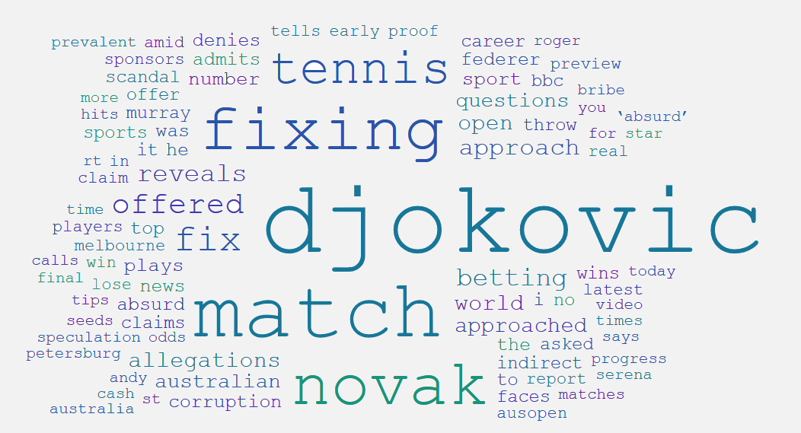
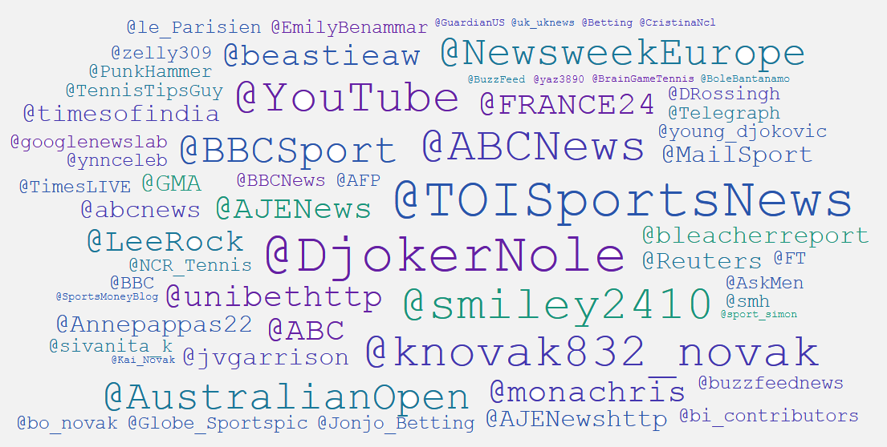
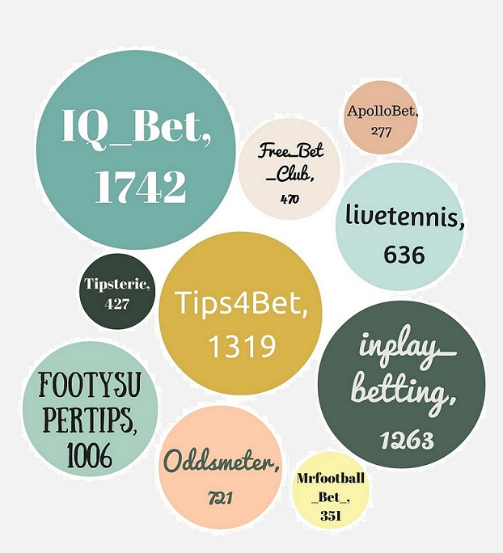
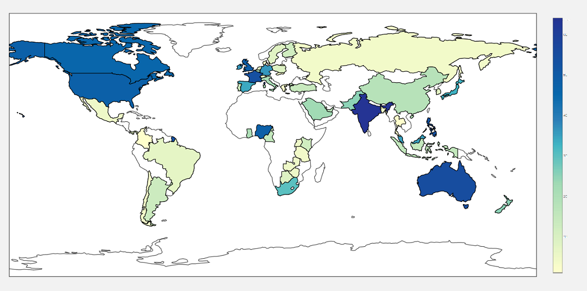

The Djokovic Case
On January the 18th 2016, Djokovic revealed that some years ago he was approached indirectly with a £100,000 offer in order to lose a match. The revealed scandal provoked a storm of reactions from the other tennis players, news agencies as well as the social media, where there was an burst of users expressing their opinions regarding Djokovic, match fixing and other related topics.
Tweets per Day
Infobox
105.188
105.188 distinct tweets
198
198 distinct Youtube comments
1.901
1.901 distinct users
2.639
2.639 distinct words
18/01/2016 - 30/04/2016
The time frame of the data is 4 months
SA Score: Neutral
The overall score of our sentiment analysis was Neutral.
Most frequent words / hashtags / mentions



Most Frequent Users / Location Map

